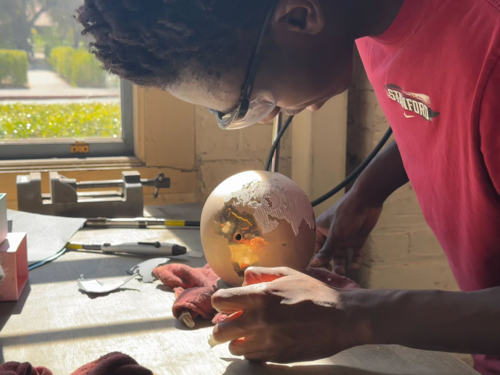
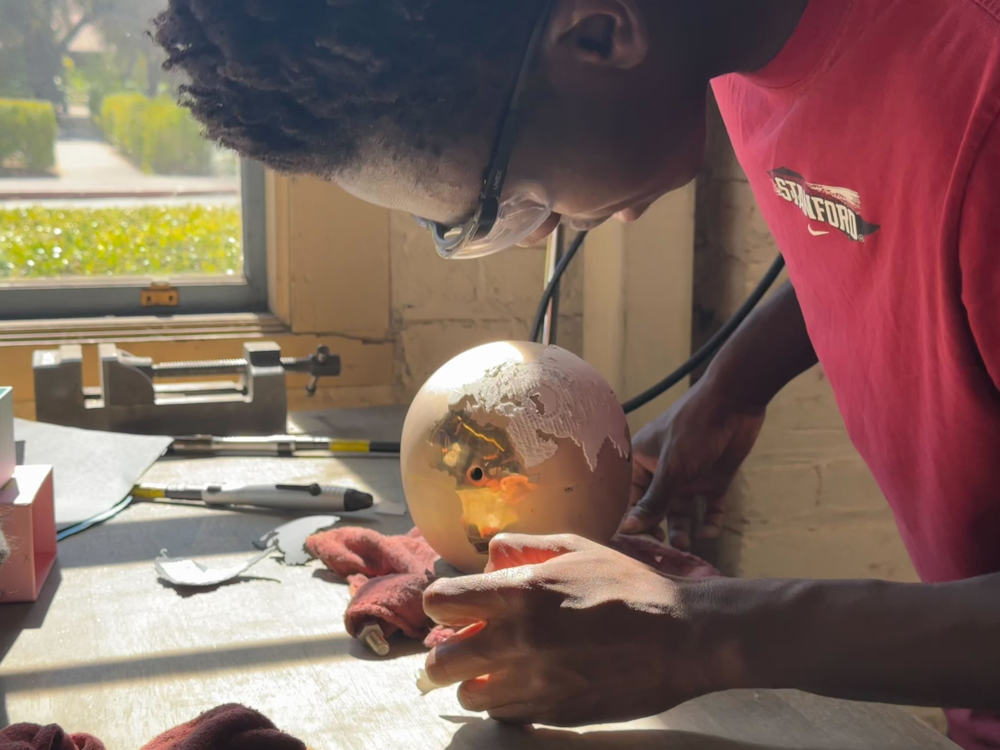

Shot Glass Stand
For my design and manufacturing class, I undertook a project that was required to combine at least two core manufacturing processes to create a unique and meaningful object. As a traveler who collects shot glasses from each city I visit, I decided to design a custom shot glass stand with a globe as the centerpiece to commemorate my travels and highlight the cultural significance of each city’s shot glass. Below, I outline the steps involved in creating this project.
-
Sketches
- The initial phase involved creating design sketches. I produced several rough, annotated sketches to visualize the overall concept and layout of the shot glass stand. These early sketches provided a foundation for refining the design in subsequent stages.


 
